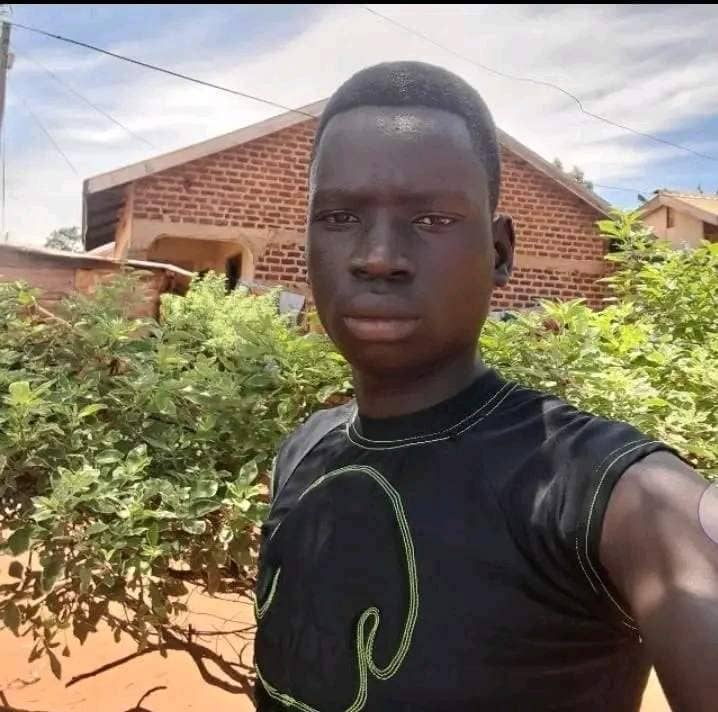

Bwire Simon Peter | WDD 130
Hey, am Bwire Simon Peter I enjoy reading novels during my free times. Am currently a student at BYU pursuing my bachelors degree in software development
I am determined to archieve my goals and willing to do all the needful and so thankful for the opportunity granted to be part of the BYU family.